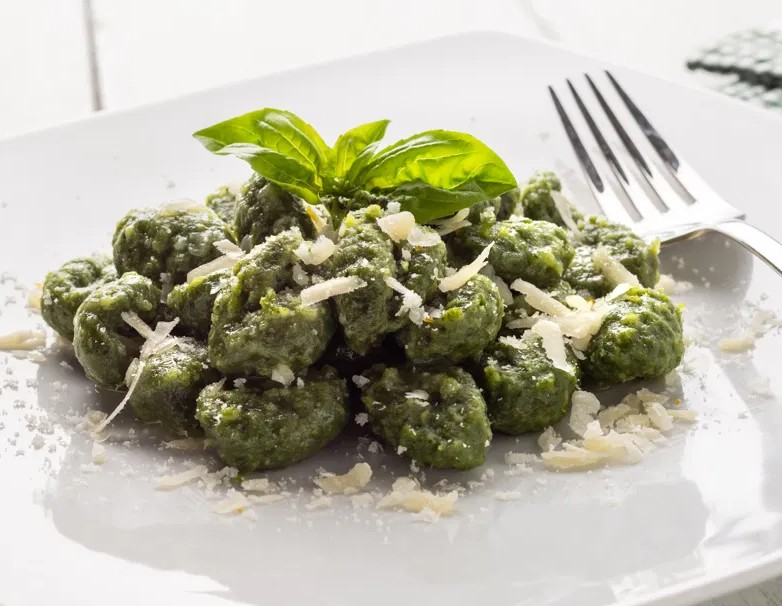
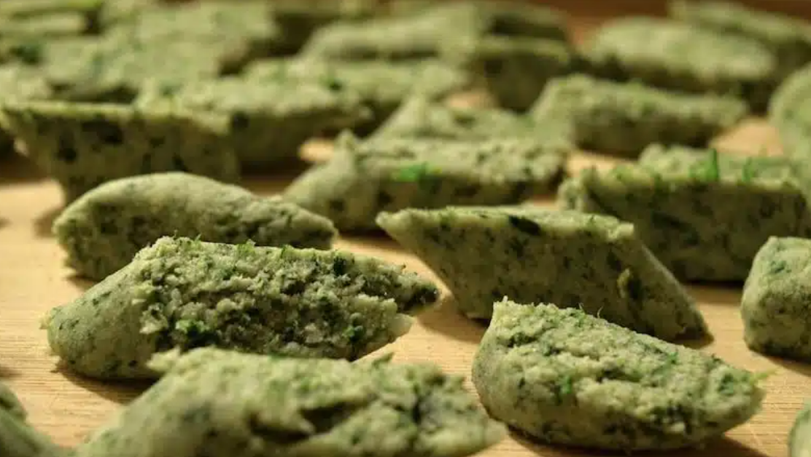

Ñoquis caseros con salsa a elección
Ingredientes
- 500 gr de harina
- 500 gr de papa
- 1 atado de espinacas
- 1 huevo
- Sal, pimienta y aceite
Preparación
- Cocinar las papas con la menos cantidad de líquido posible. O en microondas o al horno si se puede. Hacer un puré firme y condimentar a gusto.
- Hervir el atado de espinaca por un minuto como máximo. Escurrir muy bien y picar lo más chiquito posible. O mixearlo.
- Unir el puré con el huevo, las espinacas picadas y la mitad de la harina. Ir agregando el resto de la harina de a poco, hasta lograr una masa suave pero que no se pegue en los dedos. No amasar de más.
- Cortar la masa en trozos, hacer tiras finas (o choricitos, como lo llamen ustedes) y formar los ñoquis de espinaca
- En una cacerola poner agua a hervir, cuando rompa hervor poner los ñoquis de espinaca y cocinar hasta que floten en la superficie. Retirar con una espumadera y servir inmediatamente.

